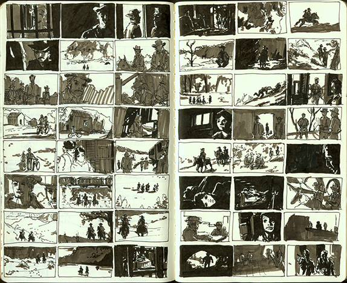
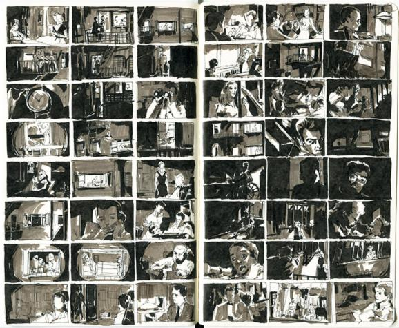
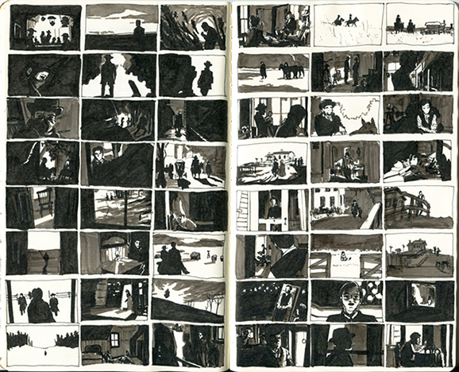
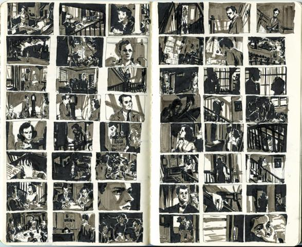
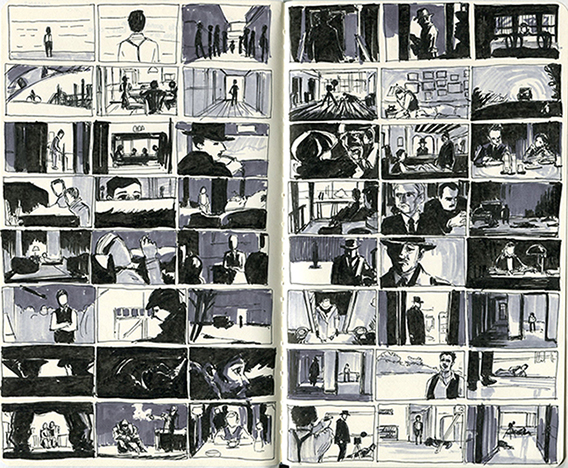

Butch Cassidy and the Sundance Kid (1969) - Cinematography: Conrad L. Hall

Rear Window (1954) - Cinematography: Robert Burks
Rear Window (1954) - Cinematography: Robert Burks

The Assassination of Jesse James by the Coward Robert Ford (2007) - Cinematography: Roger Deakins

Shadow of a Doubt (1943) - Cinematography: Joseph A. Valentine
Shadow of a Doubt (1943) - Cinematography: Joseph A. Valentine

Road to Perdition (2002) - Cinematography: Conrad L. Hall